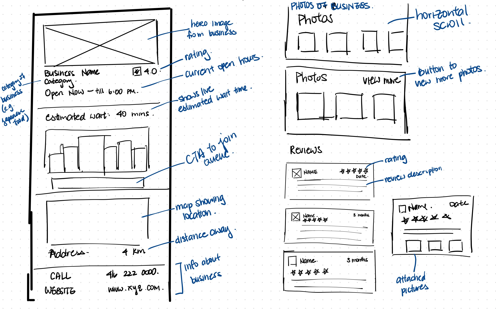
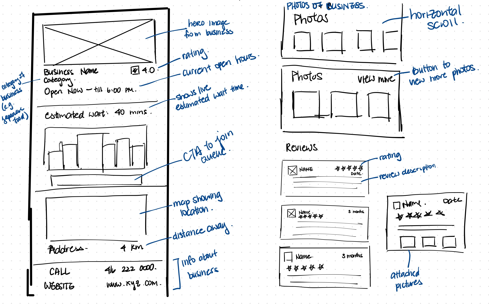
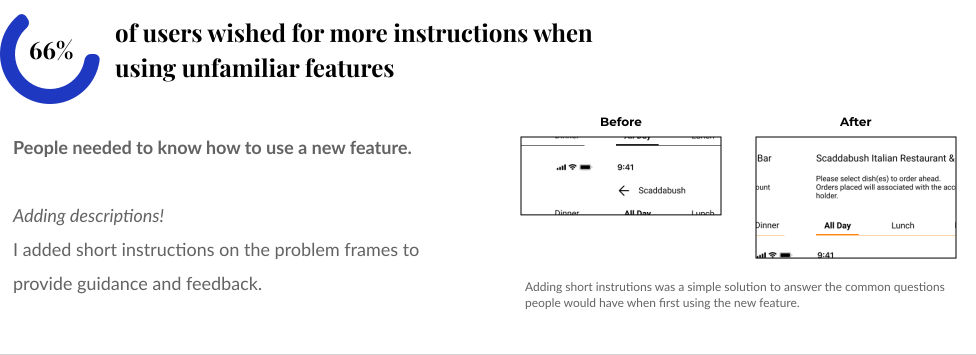
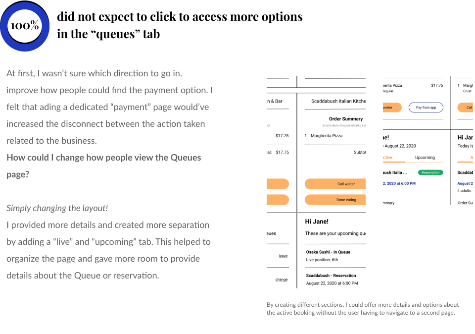

Queue
An iOS application to help people mitigate the frustrations of waiting
UX Research, Interaction Design, Branding, UI Design

Background
This project stemmed from my own frustrations of being faced with an unexpected wait time. Unlike Disneyland, where people are happy to wait over an hour, emotions such as anxiety, stress, and uncertainty can come from waiting in everyday lines. While local businesses have a place to display their peak hours and wait times, there is no system in place to provide action in avoiding wait times.
What can be done to address the emotional frustration that people feel?


Design Solution
Role: Solo designer
Timeline: 4 weeks
Tools: Figma, Maze
Queue creates a central place for communication where people can connect with local businesses and mitigate wait times through various unique features. With transparent information about a businesses’ wait times and reservation availabilities, people remain in control to efficiently go about their day. The app provides people with options to join a virtual Queue, make a reservation, and even order from a menu ahead of time.
Research
Understanding people's thoughts and emotions
I assumed that people were not a fan of waiting in line, but, I wanted to know why. I conducted remote user interviews to find out:
- Why are people so angry and frustrated while waiting?
- What contributes to their poor experiences?
- Did they ever have a positive experience waiting in line?
Customer journey map
Participants shared stories with similar emotion and thought processes. The map visualized the experience and helped show where Queue’s features could plug in.
People prefer not to use online booking because they need quick service and reassurance. How might we improve the flow of the online booking experience?
People want to be stimulated and engaged with because they need a distraction from waiting. How might we create an experience that distracts people from the wait time?
Competitor analysis
Looking at the features in the competitive space

I turned to websites with customer reviews and compared the competitors based on features, reviews, and comments left over the past year. This gave me a general idea of what was already offered in the market space and the opportunities for improvement.
Takeaways:
- existing apps don't provide live feedback on seat availability
- people cannot make, confirm, or modify a reservation within the app
- average and live wait times are delayed
- automatic electronic queue for high-in-demand tickets
- confirmation of bookings with reminders
Brainstorming
What do people need to achieve their goal?
Using the POV and HMW statements, I did brainstorming sessions to ideate on possible solutions to solve people's pain points. To generate the most idea, the first few sessions did not worry about feasability.


Following IDEO's guidelines, I spent time finding common themes, considering feasability, and conceptualizing the ideas. My focus was: what features can help avoid people's emotional frustrations?
Wireframes
Creating and choosing the best designs
Following a task flow chart I created, I tested out different ideas and layouts. A mixture of best practice layouts with novel features created a mid-fidelity prototype that would be used for testing.


 


Mid-fidelity wireframes
Joining a queue
People were frustrated not knowing if there was a wait time. With Queue, people see the latest wait time and have the option to join a virtual queue to hold their place in line.

Streamlined display of information
Slow online booking was pushing people to call in for reservations, which created inconvenience and frustration. Improving the online process so people only need to choose a date and time speeds things along.

Pay from the app
In keeping with reducing wait times, people also expressed having to wait for the bill. Paying from the app conveniently allows you to pay for the meal with the card saved on your account.
Usability testing - round 1
Testing design flows
For the first round of testing, I conducted remote task-based interviews. I focused on the new features' task flows.
Testing goals:
- Assess the task flow of the features in the prototype
- Evaluate the current layout - is everything where they expected it to be?
- Gather feedback on what else would want to seen and incorporated
Measuring success:
- More than 70% of users complete the task
- Less than 70% of users are confused
- Overall positive feelings towards concept and design
Design Iterations - 1
Guiding people through new features
Most tasks had a 100% completion rate, but the affinity map I created emphasized the details in the protoytpe where participants were confused.
 Usability testing - round 2
Efficiently using tools with little time
This time, I decided to use Maze for a remote, unmoderated testing. Since my main goal was to assess the prototype's UI, Maze allowed me to collect more opinions within a shorter time frame. The same metrics of success as round 1 were used.
My goals were to:
- Assess the UI design
- Test the iterations made to checking active queues and paying for a meal
Design iterations - 2
Visualizing improvements


Finding the right fit
The biggest takeaway was that I needed to revise my branding colour's shade of orange. I was using brighter shades to promote friendliness, but hadn't considered how it would work with the remaining elements on the screen. For inspiration, I turned to Headspace's palette of classic, muted colours and redesigned from there.
Branding guide
Queue is friendly, trustworthy, and professional
Queue is a messenger between customers and businesses. Though keeping the branding professional will help establish customer trust, but incorporating a level of friendliness will further the customer-application relationship.
Moodboard
I used pinterest.ca as another source of inspiration. In keeping with orange as the highlight color, the pictures helped show what shades and complementary colors worked well for the brand.


Final prototype
Make a decision knowing the wait times
People can transparently view a business’ wait times and join the virtual Queue from anywhere. When put into the Queue, they’ll see a live countdown of their wait time, position in line, and the time they should arrive.

Track live and upcoming events in one place
Conveniently view both live and upcoming Queues and reservations all in one place. People have the option to modify or cancel depending on the type of reservation.

Fastest communication and action within the app
After making an in-app reservation, people can browse and order from the menu ahead of time. Restaurants keep track and make sure the meal is ready upon arrival. When done eating, simply click and pay for the meal from the card saved on the account.

If I had more time...
- Research and interview restaurant waiters and managers' POV and pain points
- Devise a complementary system for reservation management
Up next →
Northville Rehabiliation Centre
UX Research, Information Architecture, Content Copywriting